O API Designer Center fornece uma interface baseada na web para projetar, documentar e testar APIs. Envolva facilmente os consumidores de API em vários estágios do processo de design com o Anypoint Exchange - uma biblioteca de APIs, modelos, exemplos e conectores - e um serviço de mocking service com um único clique.
Ao final do workshop, teremos o design completo da API.
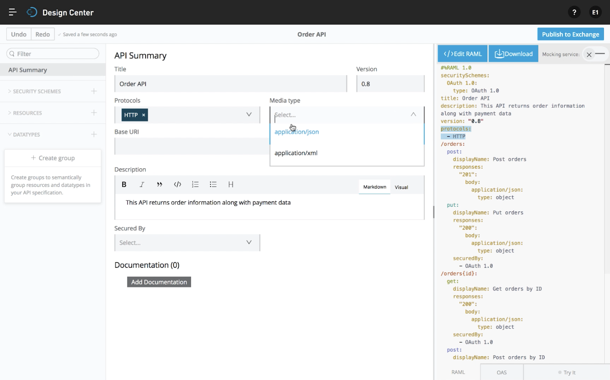
Nesta etapa, você criará uma API usando o Anypoint Design Center.
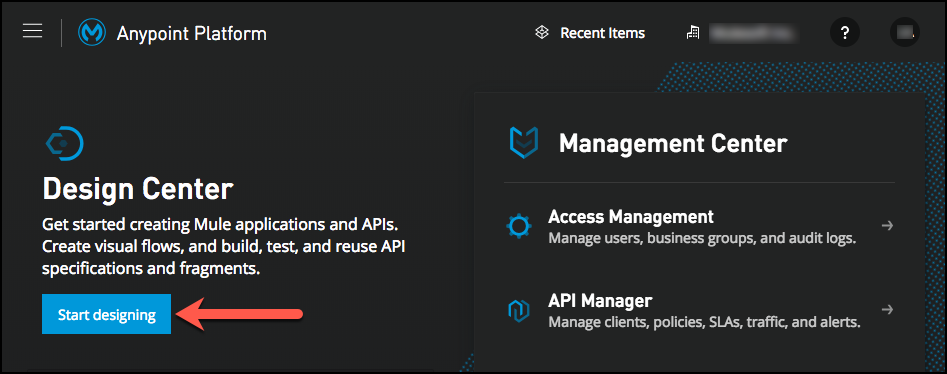
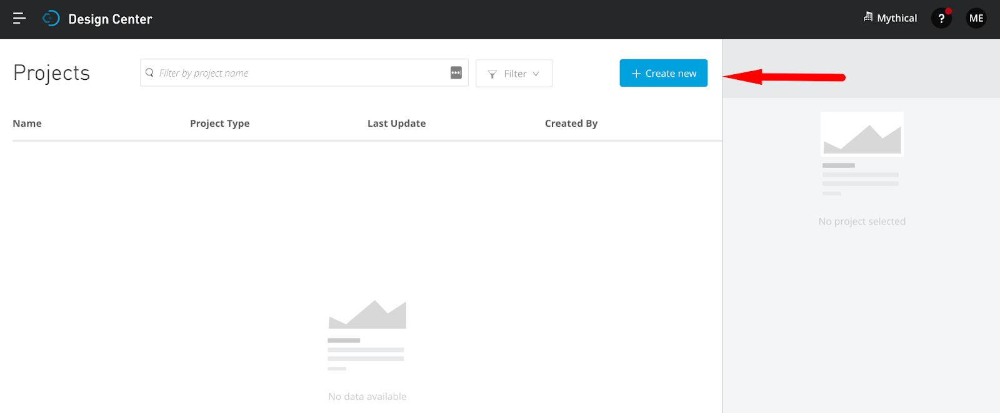
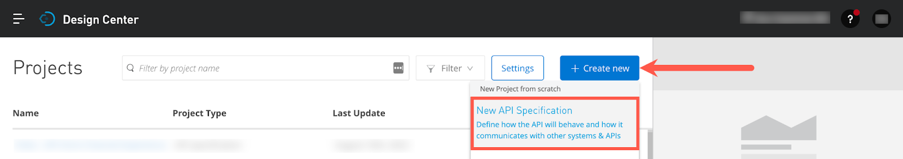
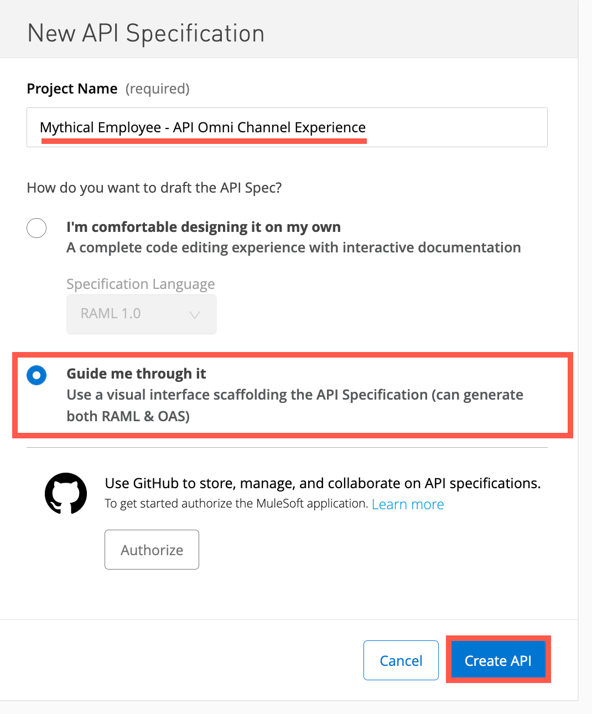
Para fornecer a funcionalidade de tratamento de pedidos para a plataforma de comércio eletrônico, criaremos um recurso de lista em nossa API usando RAML.
Anypoint Design Center fornecerá um editor de API visual para começar com um tutorial passo a passo para guiá-lo através do design de sua API visualmente.
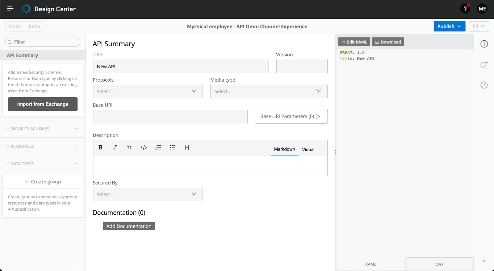
Omni Channel Experience API .1.0 . Definir versão para 1.0application/json.Agora você deve ver o seguinte em seu design de API:
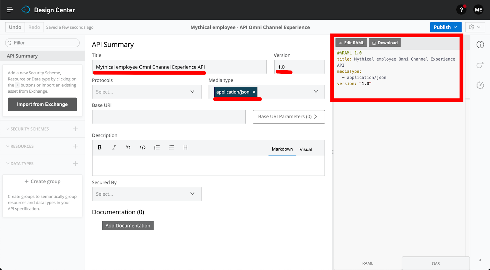
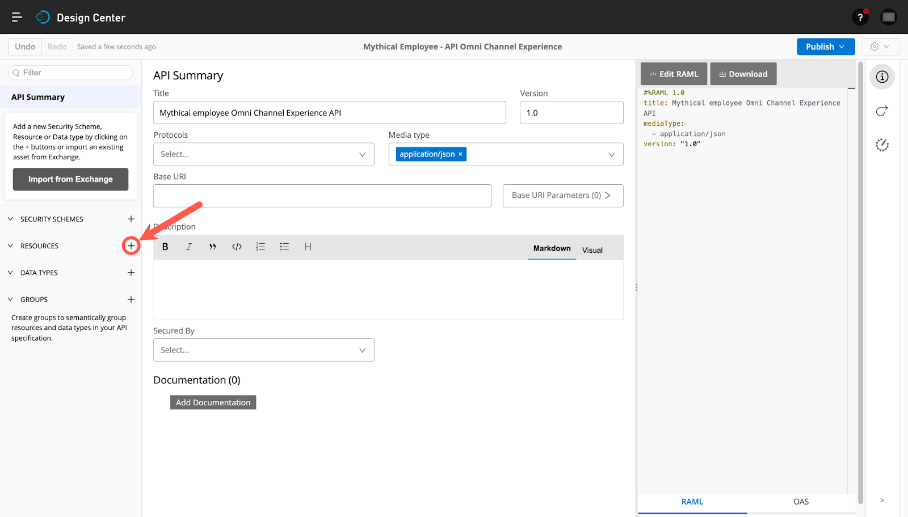
/order. Selecione a opção POST e na documentação, dê uma descrição: Creates a new order instance conforme mostrado. Observe o RAML gerado à direita.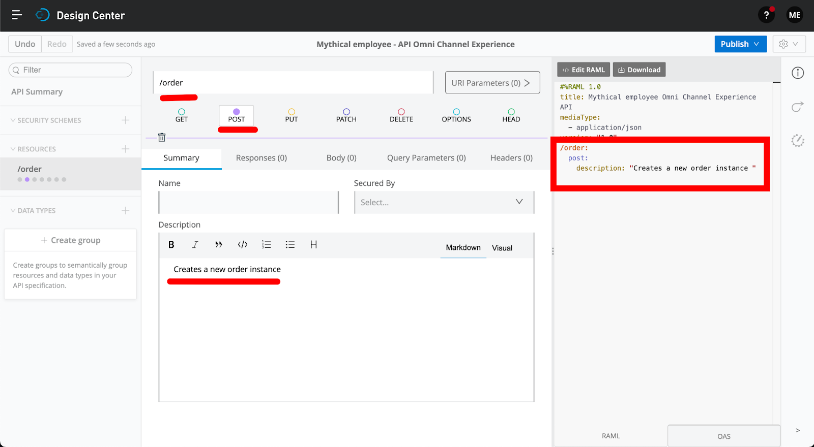
Parabéns! Você concluiu a criação de um recurso /order com uma descrição básica.
Na etapa anterior, criamos um recurso de coleta do pedido e o método POST para permitir que a aplicação de e-commerce crie uma nova instância do pedido. E se quiséssemos permitir que a aplicação de comércio eletrônico obtivesse o status de um único pedido? Precisamos criar um novo recurso sob a instância Order e usar o método GET.
+ aparece no painel de recursos.+ para adicionar um novo recurso aninhado./order/{order_id}.Order instance resource allowing to retrieve an order
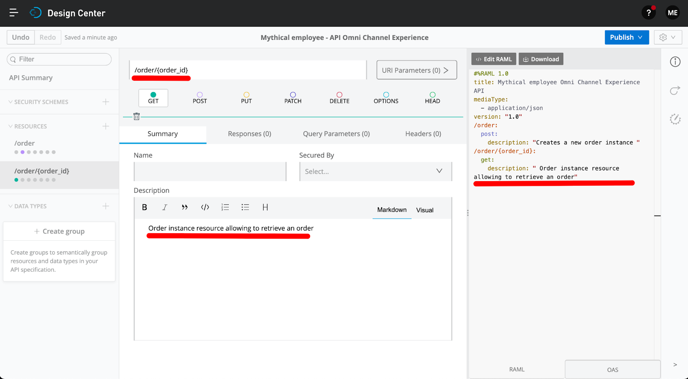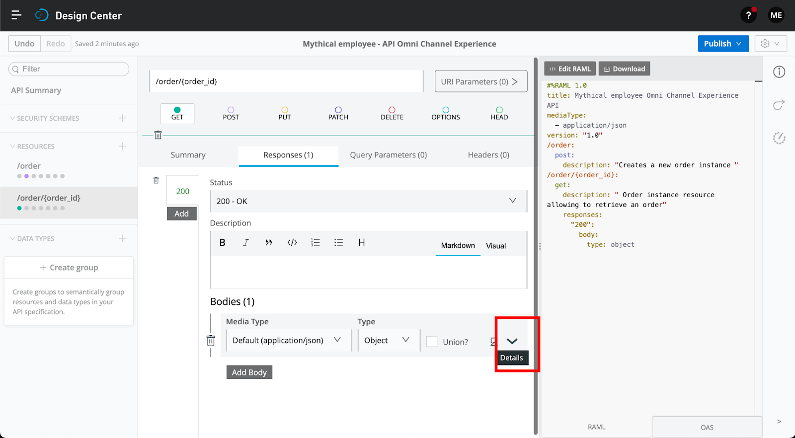
{
"order_id": "order_22",
"tracking_code": "12310391209318",
"rel_self": "http://alc.mulesoft.com / api / orders / oder / order_22 ",
" creation_date ":" 2015/12/31 10:00:00 ",
" cost ": {
" price ": 12,
" tax ": 1,
" final_price ": 13
} ,
"shipping": {
"shipping_address_id": "1122",
"rel_address": "http://alc.mulesoft.com/api/users/user/vip_user_8/address/1122"
},
"items": [
{
" product_id ":" 121 ",
" rel_product ":" http://alc.mulesoft.com/api/products/product/121 ",
" quantidade ": 1
},
{
" product_id ":" 122 ",
" rel_product " : "http://alc.mulesoft.com/api/products/product/122",
"quantidade": 2
}
]
}Dentro da plataforma Anypoint você pode trabalhar com RAML e OAS perfeitamente. Você pode verificar isso indo para o painel direito, onde o código de especificação é mostrado, e selecionando na parte inferior a guia OAS.
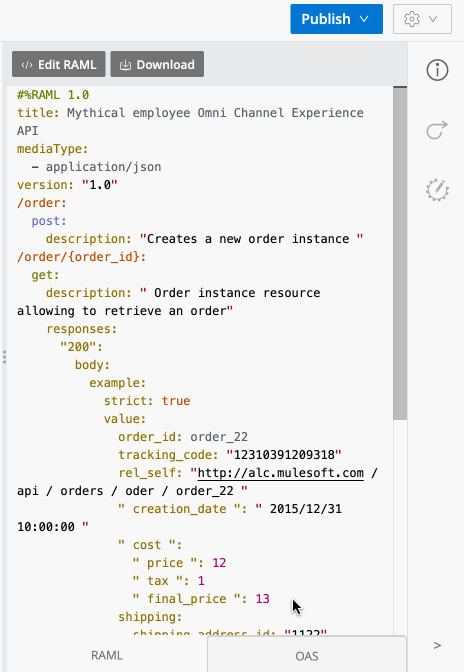
Clique na guia RAML para continuar com a próxima etapa.
Um recurso muito útil durante a fase de design é permitir que seus consumidores interajam com sua API sem precisar codificar nada. O serviço de mocking é um recurso da Plataforma Anypoint. Você pode simular chamadas para a API no API Designer antes de publicar a especificação da API no Exchange ou no Exchange após publicar a especificação da API.
O serviço de mocking lerá a especificação RAML de sua API, criará a API / serviço e retornará exemplos de respostas de dados. Este serviço permite que os usuários interajam com a API como se ela tivesse sido construída e implementada. Esse recurso permite que você itere rapidamente o design da API com seu consumidor para finalizar o contrato.
Primeiro, vamos habilitar o serviço de mocking para uso interno.
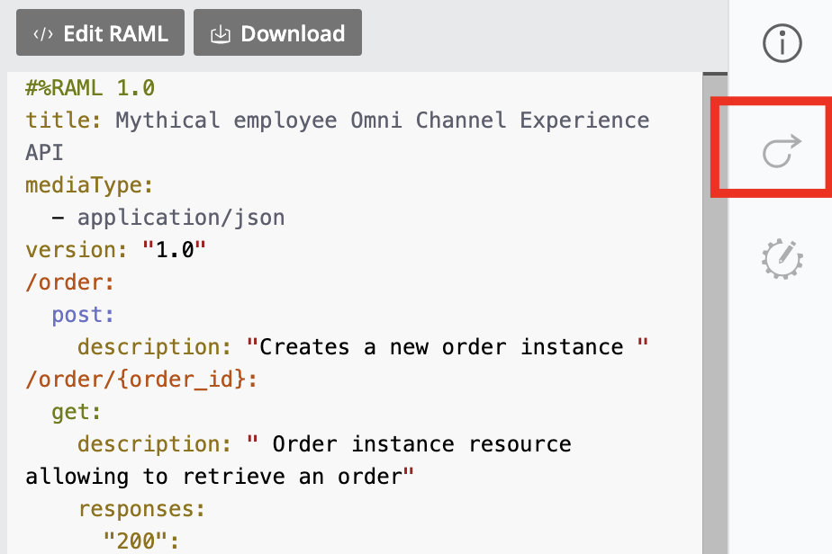
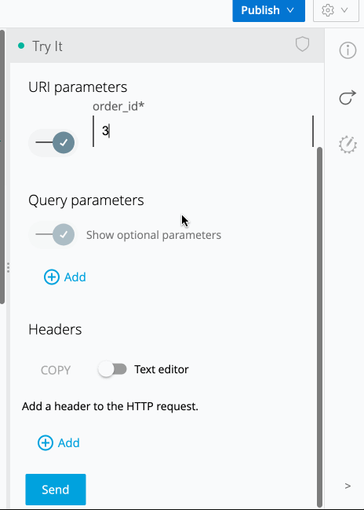
Preencha o campo "Asset version" com 1.0.0 e selecione a opção Development no campo "LifeCycle State".
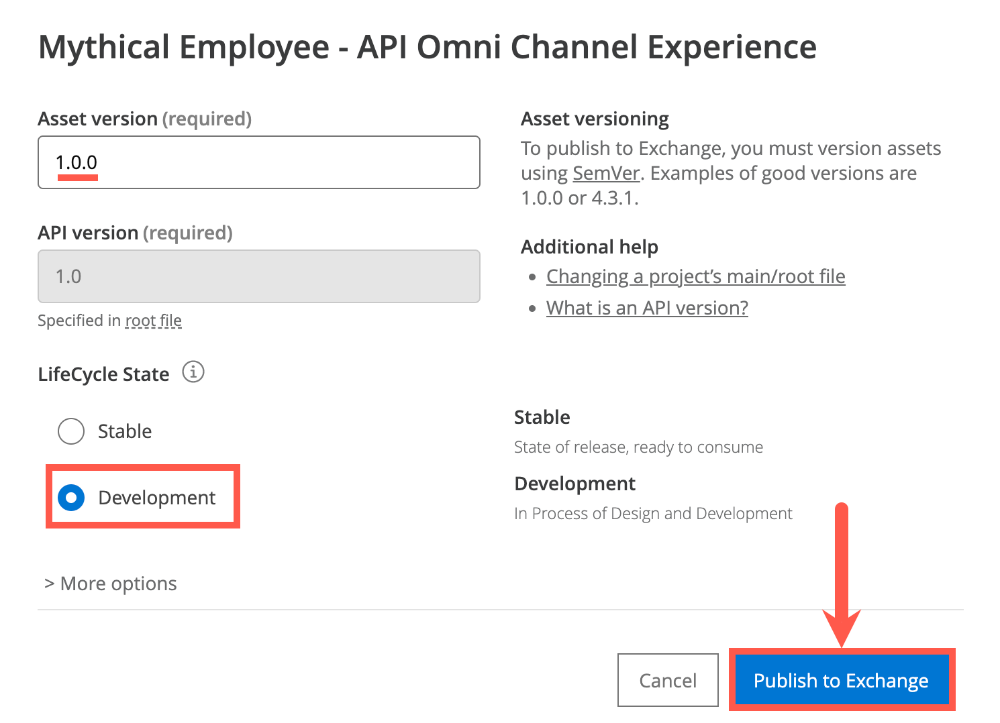
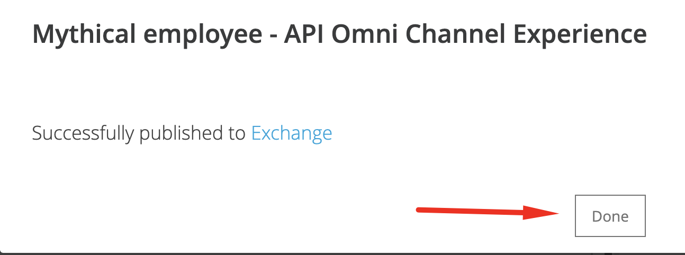
Cada vez que você publicar uma Especificação de API, você gerará dois ativos:
Nós criamos e projetamos facilmente uma nova API de experiência para nosso aplicativo de entrada de pedidos de comércio eletrônico, fornecendo a capacidade de enviar pedidos, obter pedidos e verificar o status do pedido. Aproveitamos o RAML para uma abordagem inicial de design.
Vimos como o serviço simulado pode ser utilizado para fornecer aos desenvolvedores de aplicativos uma simulação de API na qual podem construir seus aplicativos. Isso acelera significativamente o desenvolvimento de ponta a ponta.
É altamente recomendável que você reserve um tempo para explorar a Especificação da API para a API Omni Channel Experience completa localizada no Design Center. Ele fornece um exemplo abrangente de uma especificação de API de experiência e pode ser usado como um exemplo adequado ao projetar novas APIs.